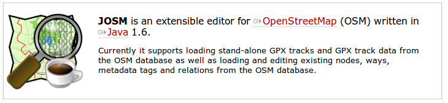
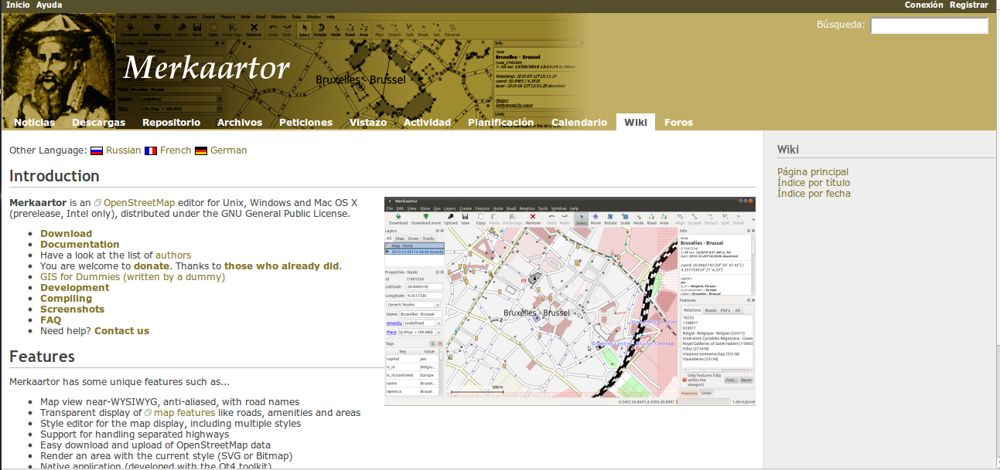
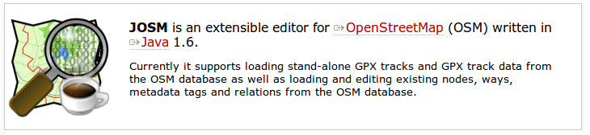
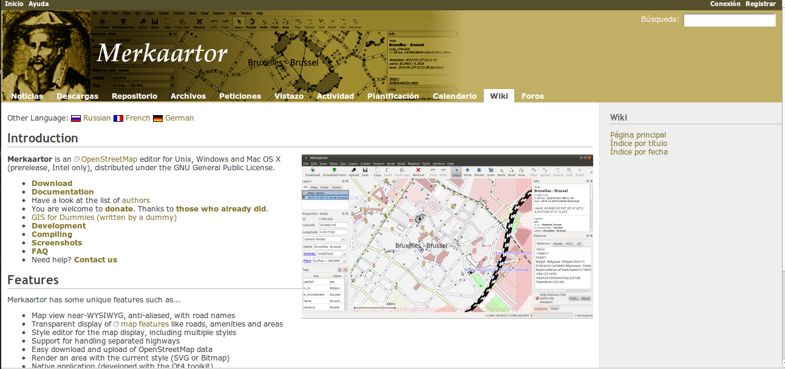
 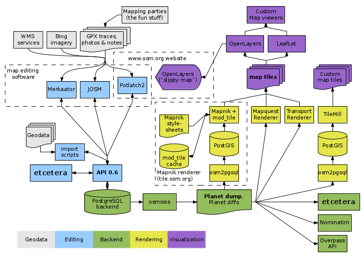
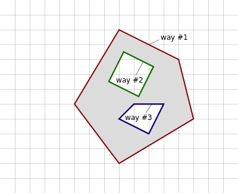
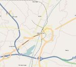
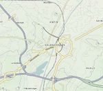
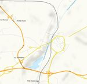
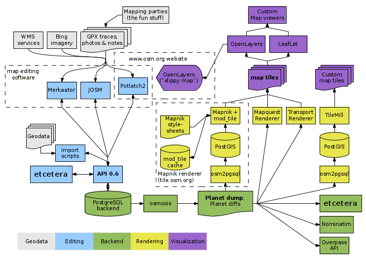
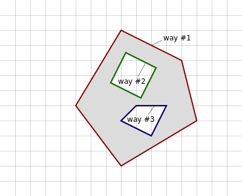
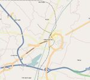
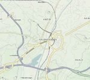
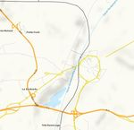
OpenStreetMap es una base de datos de información geográfica creada y mantenida de forma voluntaria y colaborativa por una creciente comunidad de entusiastas de los mapas.
Los datos contenidos en las bases de datos de OpenStreetMap son de acceso libre y gratuito.
Componente espacial: La localización y la geometría de los elementos que aparecen el el mapa. Es la que hace que la información sea calificada como geográfica
Componente temática: La naturaleza y las características particulares de los elementos que aparecen en el mapa. Responde a la preguna ¿Qué es?
Los elementos básicos del mapa de OpenStreetMap son:
Si el primer y último punto de una polilínea coinciden, la polilínea será cerrada
No existen líneas curvas, se hacen a base de polilíneas
Los elementos se describen mediante etiquetas, tags
Los tags son parejas de valores Key-Value.
Key y Value son cadenas de texto de formato libre
En la práctica hay convenciones acerca de qué etiquetas utilizar. Algunos ejemplos:
highway=residential
name=N-III
maxspeed=60
Aŕeas: Es una polilínea cerrada con la etiqueta area
Relations: Composiciones en base a elementos simples
Polygon: Relation reconocida por los renders. Permite dibujar áreas con agujeros, por ejemplo, edificios.
A través del navegador web, en la dirección:
Para poder editar los mapas es necesario registrarse como usuario
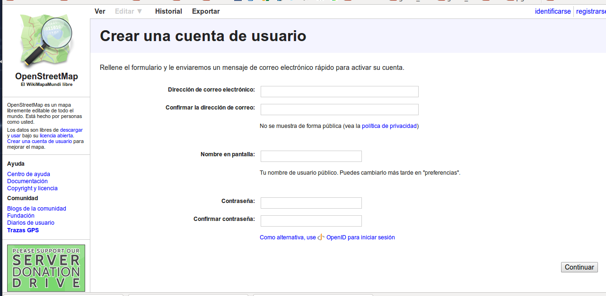https://lists.openstreetmap.org/listinfo/talk-es
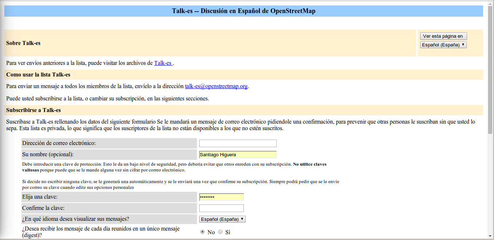1.8 millones de usuarios registrados (650.000 más que mayo 2013)
18.000 millones de nodos (6.000 millones más que mayo 2013)
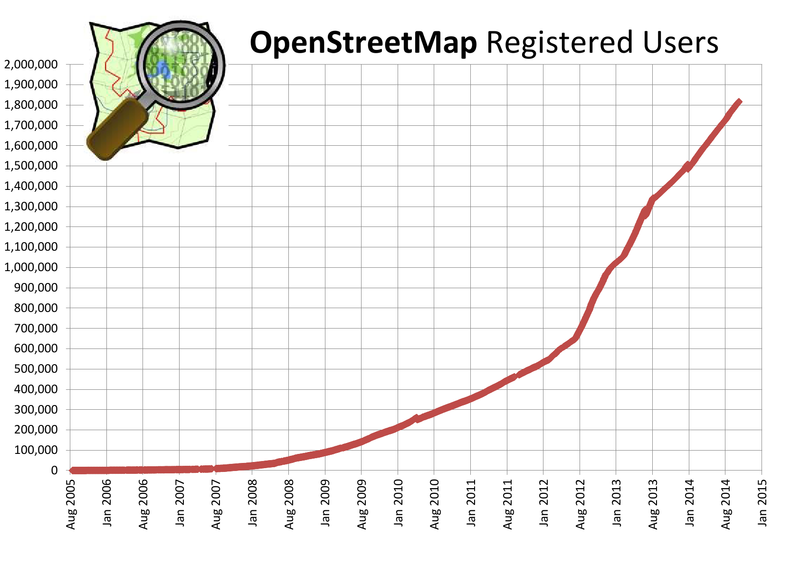 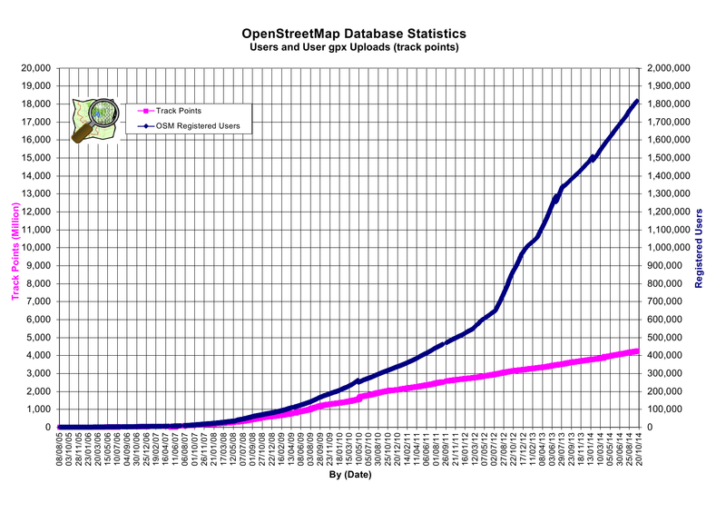OpenStreetMap está construido con las aportaciones de miles de voluntarios repartidos por todo el mundo.
Los fondos necesarios para el mantenimiento de los servidores y redes de comunicación salen de donaciones voluntarias de particulares y empresas
JOSM proporciona herramientas de edición: descarga de datos, herramientas de dibujo, mapas de fondo para calcar, catálogos de etiquetas y subida de datos a los servidores de OSM
Hay muchos complementos para JOSM. Se puede encontrar información de los mismos en:
https://josm.openstreetmap.de/wiki/Plugins
38 Gb (Nov 17, 2014)
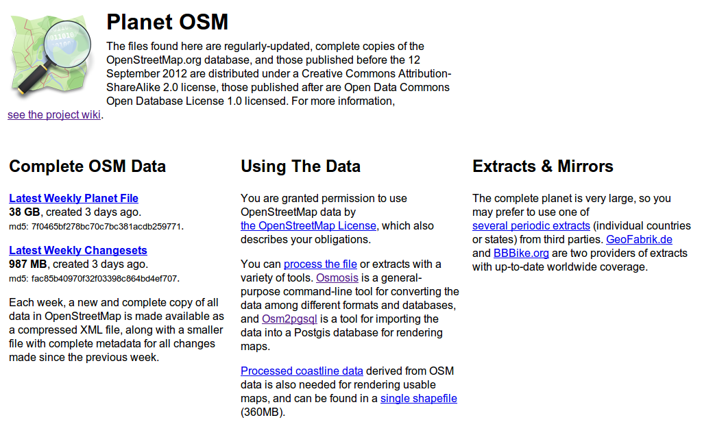Permite la descarga por continentes y paises
http://download.geofabrik.de/ 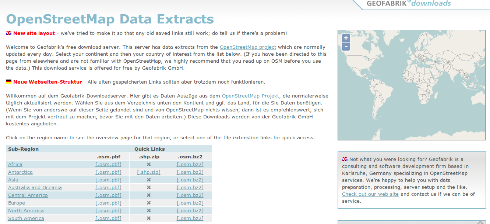Nominatim (del Latín, 'por nombre') es una herramienta para buscar datos de OSM por nombre y dirección y generar direcciones sintéticas (geocoding inverso)
El portal de nominatim:
http://nominatim.openstreetmap.org/
The Humanitarian OpenStreetMap Team [HOT] applies the principles of open source and open data sharing for humanitarian response and economic development.
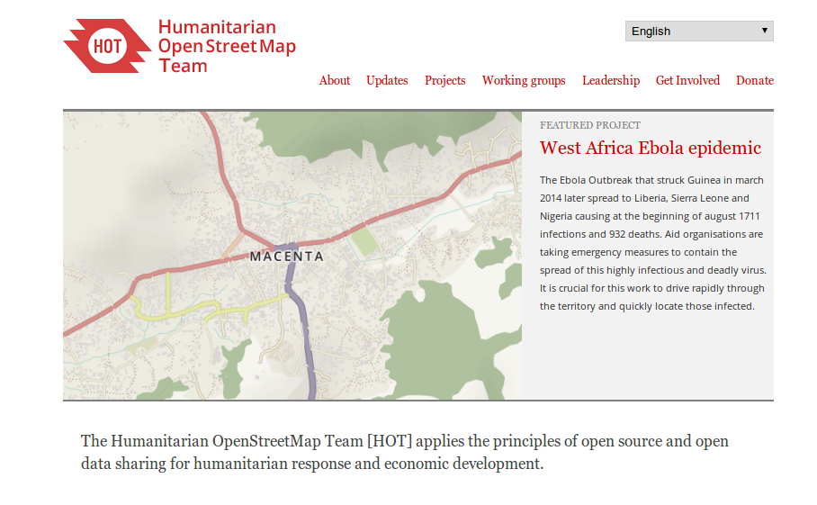
Esta obra está bajo una Licencia Creative Commons Atribución-NoComercial-CompartirIgual 3.0 Unported.